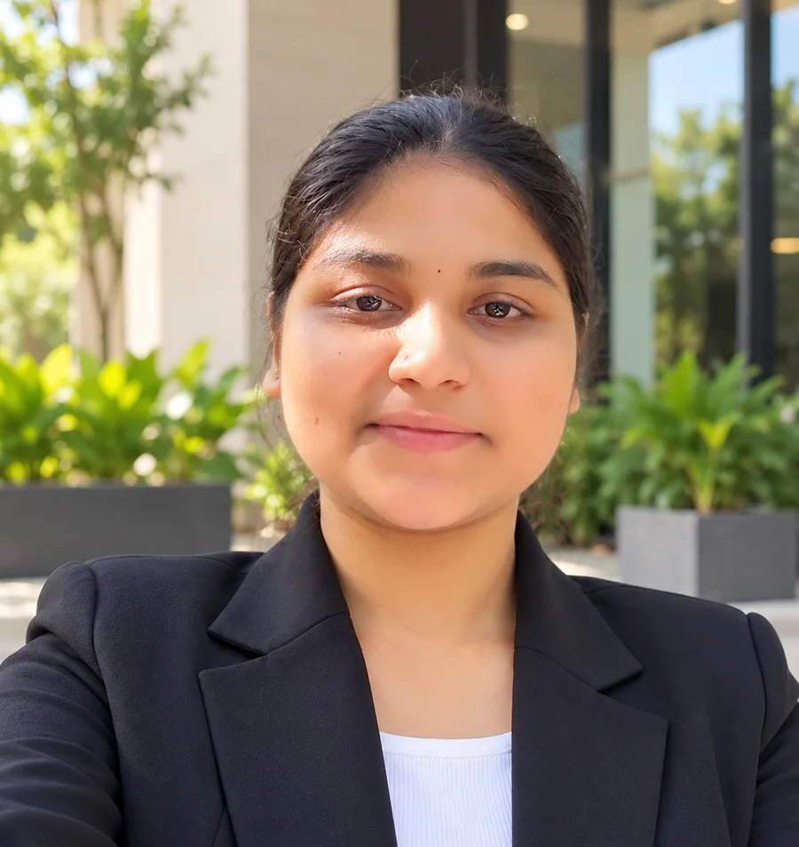
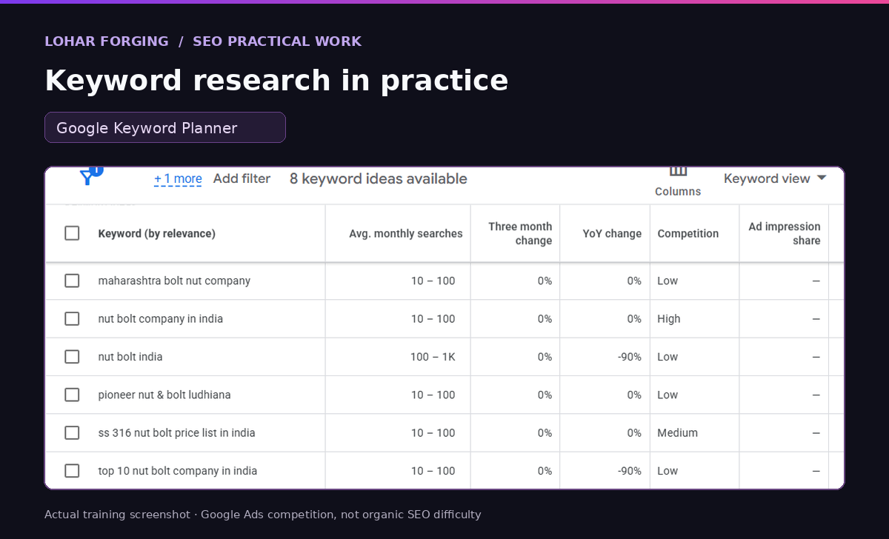
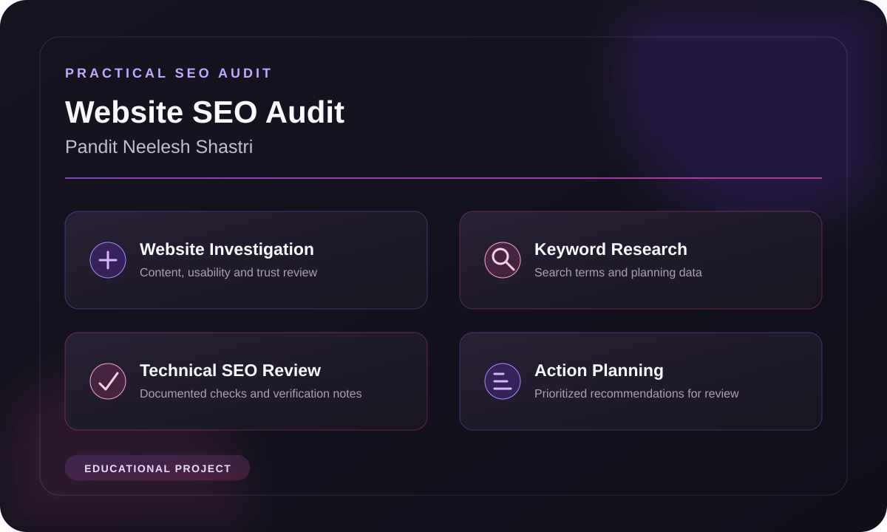
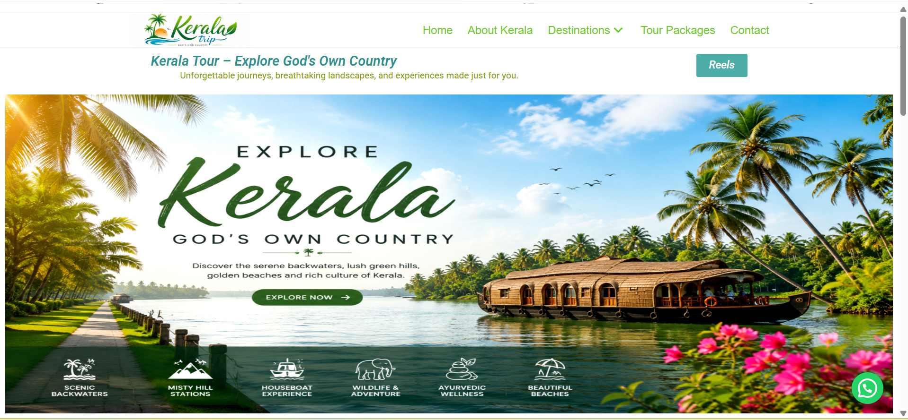
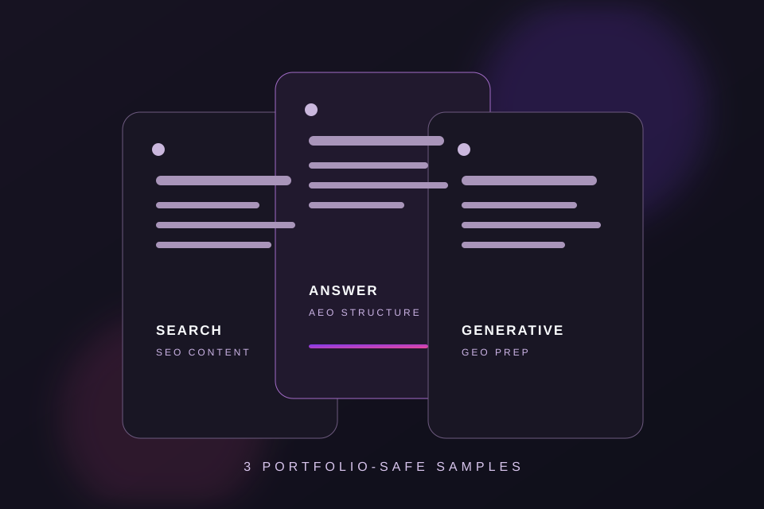

On-Page SEO
Optimizing meta titles, descriptions, headings, keyword placement, and internal links for clearer page relevance.
A FRESH PERSPECTIVE ON DIGITAL
Hi, I'm Nidhi Vinod Amburle
Digital Marketing Fresher | SEO • Content Marketing • Meta Ads • AI Creatives
B.Com graduate with hands-on training in keyword research, SEO audits, content optimization, digital marketing strategy, and AI-powered advertising concepts.

01 / THE INTRODUCTION
I'm Nidhi Vinod Amburle, a B.Com graduate and Digital Marketing Fresher with hands-on training in SEO, keyword research, website audits, content optimization, and AI-powered creative advertising. I enjoy combining analytical thinking with creativity to build meaningful digital experiences.
Through practical projects involving Lohar Forging, Pandit Neelesh Shastri, and digital advertising concepts, I've developed foundational skills in SEO research, website analysis, content planning, and campaign strategy. I'm eager to apply these skills, learn from experienced professionals, and contribute to real-world marketing projects.
Digital Marketing Internships • SEO Executive Trainee • Entry-Level Marketing Roles
02 / MY TOOLKIT
Practical digital marketing foundations developed through hands-on training and beginner-level projects.
Optimizing meta titles, descriptions, headings, keyword placement, and internal links for clearer page relevance.
Practicing backlink research, business directory submissions, and organized off-page activity tracking.
Finding relevant keywords, reviewing search intent, and organizing search-volume and competition data for planning.
Documenting content, structure, usability, and technical SEO observations with prioritized recommendations.
Writing and refining SEO-friendly website copy, headings, metadata, FAQs, and calls to action.
Creating and customizing responsive practice websites with clear structure, content, and user-friendly layouts.
Developing AI-generated product ad concepts through prompt direction, visual storytelling, and responsible labeling.
Planning basic social content, captions, platform formats, and audience-focused messaging.
Building practice campaign plans around objectives, audiences, creatives, placements, budgets, and calls to action.
PRACTICAL TOOLKIT
Tools documented across my training projects and creative work.
03 / LEARNING IN ACTION
Five evidence-backed projects showing how I research, create and organize digital marketing work.

Practical SEO trainingSEO • INDUSTRIAL WEBSITE
Practiced keyword research, basic on-page SEO, content optimization and organized backlink tracking for an industrial website.

Educational SEO auditWEBSITE INVESTIGATION • SEO AUDIT
Documented website observations, keyword planning data, technical checks, competitor notes and prioritized recommendations.

Personal practice projectWORDPRESS • WEBSITE DESIGN
Built a multi-section travel website to practice WordPress page structure, responsive presentation and introductory SEO research.
META ADS • CREATIVE STRATEGY
Designed three course-ad formats and proposed an audience, messaging, budget and lead-generation journey for a local education offer.

Practical content projectCONTENT • ON-PAGE SEO • AEO & GEO
Prepared public-safe service and product content samples using keyword-focused structure, metadata, headings, FAQs and calls to action.
These are training, educational and personal practice projects. Proposed actions and strategies are not presented as implemented changes or measured results.
04 / THE CREATIVE LAB
Five cinematic advertising concepts shaped through AI prompt direction, visual storytelling and product-focused creative thinking.
PRODUCT STORYTELLING
Premium coffee concept featuring warm lighting, rich textures, and cinematic product presentation.
Creative concept & prompt direction: Nidhi Vinod Amburle
Independent concept · Not sponsored
FOOD ADVERTISING
Food advertising concept featuring appetizing close-ups and premium restaurant-inspired visuals.
Creative concept & prompt direction: Nidhi Vinod Amburle
Independent concept · Not sponsored
BEAUTY CREATIVE
Beauty product concept focused on elegant styling, luxury aesthetics, and product storytelling.
Creative concept & prompt direction: Nidhi Vinod Amburle
Independent concept · Not sponsored
BEVERAGE CREATIVE
Dynamic beverage advertising concept exploring energetic visuals and cinematic product presentation.
Creative concept & prompt direction: Nidhi Vinod Amburle
Independent concept · Not sponsored
LUXURY PRODUCT CREATIVE
Premium skincare concept inspired by botanical elements, refined lighting, and luxury product aesthetics.
Creative concept & prompt direction: Nidhi Vinod Amburle
Independent concept · Not sponsored
Creative practice disclosure: These are independent AI-generated concept advertisements created for portfolio practice. Brand references do not imply sponsorship, endorsement, official campaign work or a client relationship.
05 / THE FOUNDATION
COMPLETED TRAINING
Completed practical training in Digital Marketing with AI, covering SEO, keyword research, content optimization, website creation, social media marketing, AI-assisted advertising, and introductory campaign strategy.
Certificate Awaited
EDUCATION
Completed Bachelor of Commerce (B.Com) studies at Prahladrai Dalmia Lions College.
Education Status: Completed
06 / LET’S CONNECT
Open to entry-level opportunities, creative collaboration
and conversations about digital marketing.
Open to Digital Marketing internships, entry-level opportunities, and creative collaborations.